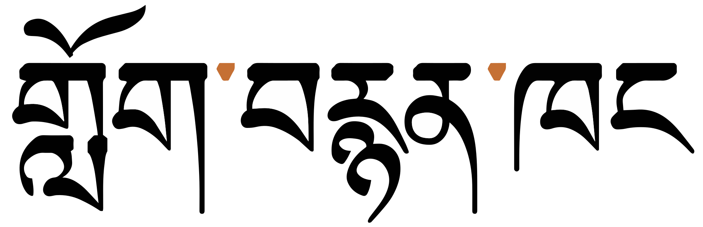
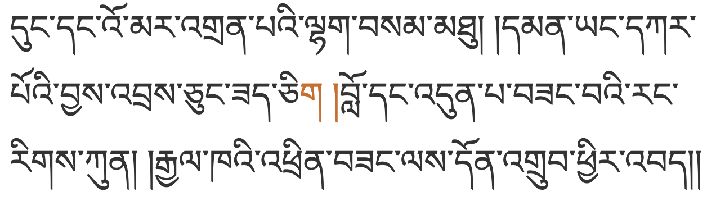
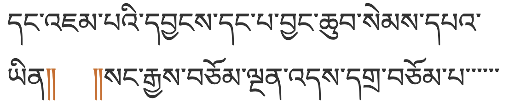

This document describes or points to requirements for the layout and presentation of text in languages that use the Tibetan script. The target audience is developers of Web standards and technologies, such as HTML, CSS, Mobile Web, Digital Publications, and Unicode, as well as implementers of web browsers, ebook readers, and other applications that need to render Tibetan text. In addition to China, especially the Tibet Autonomous Region, the script is widely used in Bhutan, Nepal, India and throughout the Tibetan diaspora, and requirements for these regions are also included in the scope of the document.
This document describes the basic requirements layout and text support on the Web and in eBooks for the Tibetan language, using the Tibetan script, and used in China, Bhutan, India, and other countries. These requirements provide information for Web technologies such as CSS, HTML and digital publications about how to support users of the Tibetan script. The information here is developed in conjunction with a document that summarises gaps in support on the Web for Tibetan.
胡春明 (Chunming Hu) prepared an early translation of parts of this document (now removed).
This document has been developed with contributions from participants of the Chinese Layout Requirement Task Force, with kind help from experts from 信标委中文信息处理分技术委员会及藏文信息处理工作组.
This document provides information about the Tibetan script as used for the Tibetan and Dzongka languages as used in China, Bhutan, India, and the Tibetan diaspora.
The aim of this document is to describe the basic requirements for Tibetan script layout and text support on the Web and in eBooks. These requirements provide information for Web technologies such as CSS, HTML and digital publications, and for application developers, about how to support users of the Tibetan script. The Tibetan script is used in China, Bhutan, India, and other countries.
Gap analysis
This document is pointed to by a separate document, Tibetan Gap Analysis, which describes gaps in support for Tibetan orthographies on the Web, and prioritises and describes the impact of those gaps on the user.
Wherever an unsupported feature is indentified through the gap analysis process, the requirements for that feature need to be documented. Those requirements can be described here.
As gaps in support for Tibetan are captured, the gaps can be brought to the attention of the relevant spec developer or the browser implementator community. The progress of such work is tracked in the Gap Analysis Pipeline.
The document should contain no reference to a particular technology. For example, it should not say "CSS does/doesn't do such and such", and it should not describe how a technology, such as CSS, should implement the requirements. It is technology agnostic, so that it will be evergreen, and it simply describes how the script works. The gap analysis document is the appropriate place for all kinds of technology-specific information.
Other related resources
To complement any content authored specifically for this document, the sections in the document also point to related, external information, tests, GitHub discussions, etc.
The initial material for this document was an edited extract from the page Tibetan orthography notes. That page contains additional details about character usage and how the writing system works, plus interactive information, which are not available here.
The document Language enablement index points to this document and others, and provides a central location for developers and implementers to find information related to various scripts.
The W3C also has a repository with discussion threads related to the Tibetan script, including requests from developers to the user community for information about how scripts/languages work, and a notification system that tracks issues in W3C working groups related to Southeast Asian scripts. See a list of unresolved questions for Tibetan experts. Each section below points to related discussions. See also the repository home page.
Tibetan script overview
Tibetan can be written using two different styles: དབུ་ཅནdbu canwith a head, the block style of the Tibetan script used in print, pronounced u.cen; and དབུ་མེདdbu medheadless, the cursive style of the Tibetan script used in shorthand and calligraphy, pronounced u.me. This page concentrates on the former. Pronunciations are based on the central, Lhasa dialect.
Historically, Tibetan text was written on loose-leaf sheets called pechas, ( དཔེ་ཆ pé.t͡ɕʰá book, scripture ). Some of the characters used and formatting approaches are different in books and pechas.
Tibetan text runs left to right in horizontal lines.
Words boundaries are not indicated. However, Tibetan words are made up of one or more units called tsheg-bar which are basically equivalent to phonological syllables. The tsheg-bar units are separated using ་ U+0F0B TIBETAN MARK INTERSYLLABIC TSHEG.
These tsheg-bar units are composed of structural elements that include vowel signs and consonants used as prefixes, root characters, subscripts, superscripts, suffixes, and secondary suffixes. A common realisation includes a stack and additional consonants to either side of the root consonant. These may indicate syllable-final consonant sounds, but more often than not they qualify or modify the root value, and are not associated with their nominal sound value. The actual pronunciation of Tibetan is usually much more simple than a typical romanisation would suggest. For example, the word བཀོད kǿː to create is transcribed as bkod.
The single-syllable word cy᷈ː string with an initial stack of three consonants plus a vowel sign. followed by a suffix consonant (to the right).
To write the sounds of the standard Lhasa dialect, Tibetan uses 28 consonant letters (plus their subjoined forms). 6 more letters are used to write Sanskrit.
A distinguishing feature of Tibetan is the set of separate code points for subjoined consonants, used to create consonant stacks. Of the 77 combining characters in the Tibetan block, 48 represent subjoined consonant forms. Unlike many other Indic scripts, the modern Tibetan orthography doesn't use a virama to create stacks.
Tibetan is an abugida with one inherent vowel. When writing the Lhasa dialect, other post-consonant vowels are represented using 4 vowel signs, all combining marks.
There are no pre-base, circumgraph, or multipart vowels in the Tibetan used to write the Llasa dialect (though there are when writing in Sanskrit).
Standalone vowels are written by adding vowel signs to either འ U+0F60 TIBETAN LETTER -A or ཨ U+0F68 TIBETAN LETTER A, depending on the tone.
Sanskrit vowels written in Tibetan use additional vowel signs and combining marks, some of which represent diphthongs, and some of which form circumgraphs or multipart characters, depending on the encoding.
Tone is indicated by the choice of root character and/or its associated prefixes and superscripts.
Modern Tibetan writing uses few punctuation marks or symbols, but the Tibetan script block in Unicode contains many of these.
Tibetan has its own set of numbers.
Tibetan Syllables
The following diagram shows characters in all of the syllabic positions, and lists the characters that can appear in each of the non-root locations. The two-syllable word in the example is འགྲེམས་སྟོན 'grems-ston ɖɹemton exhibition.
Syllable composition in Tibetan
See more information about how the various parts of the tsheg-bar work together.
Word boundaries are not indicated by the Tibetan orthography. However, phonetic syllables, represented by a sequence of letters known as a tsheg-bartsek bar, are separated by ་ U+0F0B TIBETAN MARK INTERSYLLABIC TSHEG.

The tsek in use to separate the component tsheg-bar units within a single word.show as text
གློག་བརྙན་ཁང lô.ȵɛ̃́.kʰáŋ cinema
This figure shows the use of the tsheg-bar across a whole sentence. There is no indication of word boundaries.show as text
In traditional, loose-leaf Tibetan pechas a head mark or yig-mgo (yig go) is used at the beginning of the front of the folio so that you can tell which is the front.
Head marks are also used in both pechas and books to indicate the start of a headline or the start of the first paragraph in a longer text.
[[[#fig_head_marks]]] shows a common head mark, ༄ U+0F04 TIBETAN MARK INITIAL YIG MGO MDUN MA, and the extension character ༅ U+0F05 TIBETAN MARK CLOSING YIG MGO SGAB MA. A head mark can be written alone, or can be followed by as many as three closing marks; head marks are also followed by two shads.
༄༅༎ ཡོངས་ཁྱབ་གསལ་བསྒྲགས་འགྲོ་བ་མིའི་ཐོབ་ཐང༌།
Example of use of head marks at the start of the Universal Declaration of Human Rights.
Head marks differ from text to text. The Unicode Standard provides a number of characters to give some basic coverage, but may not meet all needs.
Three less common head marks, used in Nyingmapa and Bonpo literature, are also represented in the Tibetan block, namely:
༁ U+0F01 TIBETAN MARK GTER YIG MGO TRUNCATED A ༂ U+0F02 TIBETAN MARK GTER YIG MGO -UM RNAM BCAD MA ༃ U+0F03 TIBETAN MARK GTER YIG MGO -UM GTER TSHEG MA
Sections & topics
Key divisions of the text include expressions (brjod-pa) and topics (don-tshan). They do not necessarily equate to English phrases, sentences and paragraphs.
Sections normally end with ། U+0F0D TIBETAN MARK SHAD (called shad but pronounced ʃe) followed by a space. Topics (eg. headlines, verses, and longer paragraphs) are often terminated with a double shad or separated with shad+space+shad.
A phrase that ends with the root consonant ཀ U+0F40 TIBETAN LETTER KA or ག U+0F42 TIBETAN LETTER GA will normally swallow up the shad that immediately follows it, even if there is a vowel sign. For example, where you might expect to see a double shad, you might see ཀུ ། and སྐུ །. However, the shad is not omitted if these characters have a subscript, eg. གྲུ། །.

GA swallowing up a shad at the end of a topic.show as text
When a phrase ends with shad+space+shad the space between the shad marks is normally reduced in Tibetan pechas, down to 1/4 or 1/3 of the normal width, or made to fit the space available. Some space is retained to avoid the appearance of a double-shad.§
Boundaries between chapters or significant sections may also be represented by a double-shad followed by 5-6 spaces and another double-shad.§

Double shads separated by several spaces between chapters or significant sections.show as text
༎U+0F0E TIBETAN MARK NYIS SHAD can be used for the double-shad.
In Chinese magazine publications articles may contain no double shay as a delimiter. (The text is formatted in paragraphs.) The double shay may still be found at the very end of some articles, or at the end of each line on a page containing some verse-formatted folk literature. The applies for large parts of Bhutanese newspapers, however there are other pages with plenty of double shays - some at the end of paragraphs, some inside paragraphs.
Unicode provides U+0F0E TIBETAN MARK NYIS SHAD༎ as a means of regularising the spacing between the two shad marks, which tends to be slightly bigger than a normal space. The space between the shad marks can be stretched during justification, however, and it's not clear how that would work when using NYIS SHAD.
༈U+0F08 TIBETAN MARK SBRUL SHAD is used to separate texts that are equivalent to topics and subtopics, such as the start of a smaller text, the start of a prayer, a chapter boundary, or to mark the beginning and end of insertions into text in pechas.
This drul-shad is usually surrounded on both sides by the equivalent of about three non-breaking spaces (though no rule is specified).§ The drul-shad should not appear at the beginning of a new line and the whole structure of spacing-plus-shad needs to be kept together.
For ༑U+0F11 TIBETAN MARK RIN CHEN SPUNGS SHAD see [[[#rin_chen_spungs_shad]]].
྾U+0FBE TIBETAN KU RU KHA (often repeated three times) indicates a refrain.
Tsek and section boundaries
The tsheg is not used before a shad, except after ང U+0F44 TIBETAN LETTER NGA. For example, note the end of the three sections in [[[#fig_tsek_shad]]]:
Tsheg not being used before shad, and of U+0F0C being used between NGA and shad.show as text
So that line-breaking keeps the NGA + tsheg + shad together, ༌ U+0F0C TIBETAN MARK DELIMITER TSHEG BSTAR should be used between NGA and a shad. This is a non-breaking version of the tsheg (the word 'delimiter' in the name is a misnomer).
TSEG BSTAR being used between NGA and shad.show as text
Space is used as a punctuation mark in Tibetan, to separate meaning in sections. It should not appear at the start of a line.§
Spaces in Tibetan text are usually wider than spaces in English text, and typically only occur after one of the following:
། U+0F0D TIBETAN MARK SHAD
༑ U+0F11 TIBETAN MARK RIN CHEN SPUNGS SHAD
༔ U+0F14 TIBETAN MARK GTER TSHEG
ཿ U+0F7F TIBETAN SIGN RNAM BCAD
However, numbers and embedded Western text are surrounded by smaller spaces, eg.
ལོ་ ༢༠༠༡ ཤིང་བྱ་ཟླ་ ༩ ཚེས་ ༥ ཉིན་
So that line-breaks work correctly, U+00A0 NO-BREAK SPACE should be used for spaces when they appear after
ཀ U+0F40 TIBETAN LETTER KA
or
ག U+0F42 TIBETAN LETTER GA,
or between 2 shad or double-shad characters. It should also be used for spacing around
༈ U+0F08 TIBETAN MARK SBRUL SHAD.
Except for special situations, such as the use of sbrul shad, it is recommended to use a single space where gaps appear, and to stretch that space where necessary.§
However, ༵ U+0F35 TIBETAN MARK NGAS BZUNG NYI ZLA
may also be used to create a similar effect to underlining or to mark emphasis/honorifics.
If entered as combining characters they can be added after the vowel-sign in a stack. But this mark is normally attached to the syllable, halfway between the rendered start and end of the syllable as a whole. If there are an even number of spacing characters in the syllable the mark will fall between the two middle characters, rather than beneath one character.
Application software has to ignore this character for text processing operations such as search and collation.
Alternative methods of emphasis include use of a different colour, or the use of the prefix ༸.
༷ U+0F37 TIBETAN MARK NGAS BZUNG SGOR RTAGS can be used in interspersed commentaries to tag the root text that is being commented on. An alternative is to set the tsheg-bar being commented on in large type and the commentary in small type.
Application software has to ignore this character for text processing, such as search and collation.
Tibetan never breaks inside a syllable, and has no hyphenation.
Normally, lines break after ་ U+0F0B TIBETAN MARK INTERSYLLABIC TSHEG, and don't break after spaces. If a word is composed of multiple syllables, it is also preferable to avoid breaking a line in the middle of the word.
However, line breaks should not occur after a
tsheg when it is between ང U+0F44 TIBETAN LETTER NGA
(with or without a vowel sign) and
། U+0F0D TIBETAN MARK SHAD.
Applications should be able to handle this if they encounter a normal tsheg, but content authors are advised to use
༌ U+0F0C TIBETAN MARK DELIMITER TSHEG BSTAR
instead, to be on the safe side.
Line breaks are also possible after:
། U+0F0D TIBETAN MARK SHAD
- as long as the next line starts with a consonant (ie. not a second shad).
༔ U+0F14 TIBETAN MARK GTER TSHEG
ཿ U+0F7F TIBETAN SIGN RNAM BCAD
(visarga) (there is never a tsheg after this character, eg.
ཨོཾ་ཨཱཿཧཱུྃ་)
༴ U+0F34 TIBETAN MARK BSDUS RTAGS
or
྾ U+0FBE TIBETAN KU RU KHA§
A line must never start with a shad, space, or other punctuation sign.§
A line that ends with a shad plus space followed by a consonant can wrap after the shad and discard the space. But a line that ends with one of the following must not lose the space and must not be broken either side of the space:
ཀ U+0F40 TIBETAN LETTER KA
or
ག U+0F42 TIBETAN LETTER GA
followed by a space (in which case a shad is not used)
a shad followed by a space then another shad.
This should be straighforward if content authors use U+00A0 NO-BREAK SPACE for the latter cases.
Line breaks and rin chen spungs shad
In Tibetan, especially in pechas, it is considered a special case if the last syllable of an expression that is terminated by a shad or a double-shad breaks onto a new line. In that case
། U+0F0D TIBETAN MARK SHAD
may be replaced by
༑ U+0F11 TIBETAN MARK RIN CHEN SPUNGS SHAD.
This change serves as an optical indication that there is a left-over syllable at the beginning of the line that actually belongs to the preceding line.
When a line starts with a tseg-bar containing 2 vowel signs (ie. a diphthong), such as ལེའུ། །, no rin chen spungs shad would be used, since le'u is pronounced as two syllables.
At the end of a topic the rules say that only one shad should be converted, ie. ༑ །, however it is moderately common to see both converted, ie. ༑ ༑.
Some printed books do not use rin chen spungs shad replacements, however the majority of books seem to apply the same rules as are used with pechas.
In an environment where the width or content of the page can change, such as a web browser, this feature poses a problem. In printed or written texts where the layout is fixed, a content author would typically only insert rin chen spungs shad once the line breaks have been established, and would not expect the text to be changed after that. On the Web, resizing a window or displaying on different devices will reflow the content, and only after that process is it apparent which instances of shad need to be converted. Applications need to be able to automatically switch between the two styles of shad in real time, as a syllable moves on or off a new line because the page is resized or the preceding content is modified.
The Unicode Standard adds: Not only is rin-chen-spungs-shad used as the replacement for the shad but a whole class of “ornamental shads” are used for the same purpose. All are scribal variants on a rin-chen-spungs-shad, which is correctly written with three dots above it.
There are two alternative methods of justification.
Method 1: Inter-character spacing
Spacing between all characters should be adapted equally. Note that the width of the white-space character should not be changed significantly, so Tibetan texts use the non-breaking space mentioned above, which doesn't change width on justification.
Method 2: tsheg padding
While hand writing pechas, but also in some publications, authors add small spaces across the text to get the line end as near as possible to the right margin. Where space remains at the margin, it may be left as is, if it is short. Otherwise, the remaining space will be filled with tshegs to make the line as flush as possible with the right margin (there will usually still be a slight raggedness to the right edge of the text).
A page of a booklet showing tsheg padding. (Click on the image to see larger.)
There are a couple of detailed rules about the use of tsheg padding. Justifying tshegs are almost always used when the line ends in a tsheg. If, however, the line ends in a shad, there are a number of alternatives.
If the line ends with a single shad the shad is followed by spaces. Tsheg padding is never applied after spaces. (See examples in the figure above.)
If the line ends in a double shad (with space between), it is unusual (though possible) to add tsheg padding. Instead, the space between the shads is stretched or narrowed. (See examples in the figure below.) The same applies if the second shad was removed because it was preceded by a KA or GA.
Booklet pages showing double shad usage at the end of a line.
Tibetan uses a hanging baseline, which tends to fall between the ascender and x-height of Latin text. When text in smaller annotations or larger heading text is mixed with normal text, the letter-heads of all characters should align to the same height.
Tibetan places vowel marks above base characters, and can also add combining characters below the line. In addition, the stacking of consonants, which can have vowel sign below, further extends the text height downwards. The complexity of the glyph clusters means that the vertical resolution needed for clearly readable Tibetan text is higher than for English, or most Latin text.
To give an approximate idea, [[[#fig_baselines]]] compares Latin and Tibetan glyphs from the Noto Serif font.
Font metrics for Latin text compared with Tibetan glyphs in the Noto Serif Tibetan font.
[[[#fig_baselines_other]]] shows similar comparisons for the Microsoft Himalaya and Tibetan Machine Uni fonts.
Latin font metrics compared with Tibetan glyphs in the Microsoft Himalaya (top) and Tibetan Machine Uni (bottom) fonts.
Tibetan numerals can be used for list counters. The Tibetan numbers are used in a simple decimal notation, ie. in the same way as European numerals; they differ only in shape.
In pechas, Tibetan text is written inside a visible box which defines the margin of the page. In more recent publications this box may be invisible. Modern publications also use paragraphs. The initial line of a new paragraph may be indented.
Traditional pechas only have 2 sizes of text: ཡིག་ཆེན་larger, and ཡིག་ཆུང་smaller, where the larger is the standard size. The smaller text needs to be readable, and so doesn't usually go below 20pt; the larger text is likely to be around 27-30pt.§
Titles are usually written on a title page, using the 'larger' size. However, on shorter pechas it may be written on the same page as the text using the 'smaller' size.§
Small size text is also used to write annotations, in a similar way to the use of italics or footnotes in the West.§
Notes, footnotes, etc.
༶U+0F36 TIBETAN MARK CARET -DZUD RTAGS BZHI MIG CAN and ྿U+0FBF TIBETAN KU RU KHA BZHI MIG CAN are used to indicate where text should be inserted within other text or as references to footnotes and marginal notes.
References
报告中引用到的中国国家标准，或其他标准文本
China National Standards . 《信息技术信息交换用藏文编码字符集基本集》
China National Standards. 《信息技术藏文编码字符集点阵字形-第一部分：白体》
Moved Acknowledgements section to top of introduction and renamed 'Contributors'.
Updated information and links in the introduction.
Rewrote the script overview section.
Added links to all sections where additional information is available.
Removed Appendix D: Character List.
Removed and rewrote most of the material in the section Tibetan Script Overview. (More up to date and detailed information can be found in the page Tibetan orthography notes.)
Removed the (partial) Chinese translation text and markup. Moved Chunming Hu's name from the list of editors to the acknowledgements section.